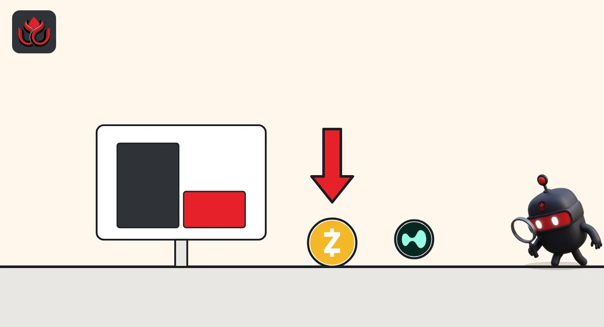

Zcash fell 12% to $1,015. Hyperliquid lost 57% of its open Zcash bets in a day
ZEC dropped from about $1,160 to $1,015 in 24 hours. On Hyperliquid, open interest in the ZEC perpetual fell from $486.8 million to $211.3 million, CoinGecko data show, the steepest cut of any big venue.
Key points
- ZEC traded at $1,014.58 at 12:37 a.m. ET on November 11, 2026, down 12.6% in 24 hours, after touching $999.57.
- Hyperliquid's ZEC-USD open interest fell from $486.8 million to $211.3 million in about 24 hours, a 57% drop. In coins, that is about half.
- Hyperliquid slipped from No. 1 for ZEC open interest on November 8 to No. 3, behind Binance ($454.3 million) and OrangeX ($368.8 million).
- Bybit's ZEC funding rate turned negative, so on Bybit short sellers now pay a small fee to buyers.
What moved
Zcash (ZEC), the privacy coin that sits 10th by market value on CoinGecko, traded at $1,014.58 at 12:37 a.m. ET on November 11, 2026. That was down 12.6% in 24 hours and 14.5% in seven days. The 24-hour range ran from $1,196.04 down to $999.57, so the coin briefly dipped below $1,000.
Our November 10 story, using prices from early that morning, had ZEC at $1,160.05 and open futures bets down 40% over two days. A day later, one venue took a much sharper cut. New to perpetual futures? Read how Hyperliquid works.
Hyperliquid's bets halved
Open interest measures how many dollars sit in futures positions nobody has closed yet. On CoinGecko's derivatives list at 12:38 a.m. ET, Hyperliquid's ZEC-USD perpetual (a futures contract that never expires) showed $211.3 million, down from $486.8 million a day earlier.
Price explains only part of that. ZEC fell about 12.5% between the two readings. Counted in coins, open bets went from roughly 420,000 ZEC to about 208,000 ZEC, a fall of about half. That means many traders closed positions, either on purpose or because the exchange force-closed them (liquidation). The public data we read do not show which.
Other big venues shrank far less: Binance fell 11.8% to $454.3 million, OKX 10.0% to $138.1 million, Bybit 9.7% to $86.7 million, Gate 8.0% to $178.6 million and CoinW 16.9% to $173.0 million. OrangeX rose 2.4% to $368.8 million.
ZEC perpetual open interest, November 10 vs. November 11
US$ million
Source: CoinGecko derivatives API, read November 10, 2026, 12:46 a.m. ET (Binance 1:03 a.m. ET) and November 11, 2026, 12:38 a.m. ET

From No. 1 to No. 3
On November 8, Hyperliquid held more open ZEC bets than any other venue, $626.0 million. Three days later it ranks third. The six venues we have tracked since then (Hyperliquid, OrangeX, CoinW, Gate, OKX, Bybit) now hold $1.16 billion, down from $1.50 billion a day ago and $2.51 billion on November 8.
CoinGecko lists 85 ZEC perpetuals in all. Together they traded about $16.8 billion in a day and held about $2.41 billion of open bets. Binance's ZECUSDT contract was the busiest, with $2.70 billion.
Who pays whom now
A funding rate is a small payment between traders that pulls a perpetual's price toward the coin's spot price. A positive rate means traders betting on a rise pay those betting on a fall.
Funding was positive on 68 of 85 ZEC perpetuals, negative on 12 and zero on 5. A day earlier it was 73 positive and 9 negative. Bybit, at 0.01% a day ago, showed minus 0.0027%. Hyperliquid stayed at 0.00125% per hour.
LC Insight analysis
This section is our reading of the facts above, not a statement of fact.
- We think Hyperliquid's cut stands out because the other venues lost only 8% to 17%. Onchain traders appear to have taken more risk on ZEC and were the first to leave when it broke toward $1,000.
- Funding is still mostly positive, so many buyers are still paying to hold long bets. If ZEC keeps sliding, those bets remain the ones at risk.
- Less open interest on Hyperliquid means smaller forced moves from that venue in the next days, but Binance and OrangeX still hold $823 million of bets between them.
What's next
- ZEC holding the $999.57 low
- Hyperliquid ZEC open interest against $211.3 million
- More venues turning to negative funding
- Binance ZECUSDT open interest against $454.3 million
Disclaimer. This article is based on public information and the sources listed below as of the update time shown. It is for information only and is not investment, legal or tax advice. Figures may change as companies and authorities publish new data.